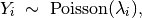
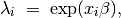
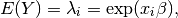
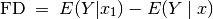
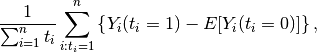
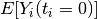
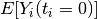

Poisson Regression for Event Count Dependent Variables
Use the Poisson regression model if the observations of your dependent variable represents the number of independent events that occur during a fixed period of time (see the negative binomial model, , for over-dispersed event counts.) For a Bayesian implementation of this model, see .
With reference classes:
z5 <- zpoisson$new()
z5$zelig(Y ~ X1 + X ~ X, data = mydata)
z5$setx()
z5$sim()
With the Zelig 4 compatibility wrappers:
z.out <- zelig(Y ~ X1 + X2, model = "poisson", data = mydata)
x.out <- setx(z.out)
s.out <- sim(z.out, x = x.out)
Load sample data:
data(sanction)
Estimate Poisson model:
z.out <- zelig(num ~ target + coop, model = "poisson", data = sanction)
## How to cite this model in Zelig:
## Kosuke Imai, Gary King, Olivia Lau. 2007.
## poisson: Poisson Regression for Event Count Dependent Variables
## in Kosuke Imai, Gary King, and Olivia Lau, "Zelig: Everyone's Statistical Software,"
## http://datascience.iq.harvard.edu/zelig
summary(z.out)
## Model: 1
## Call: stats::glm(formula = num ~ target + coop, family = poisson("log"),
## data = .)
##
## Coefficients:
## (Intercept) target coop
## -0.968 -0.021 1.211
##
## Degrees of Freedom: 77 Total (i.e. Null); 75 Residual
## Null Deviance: 1580
## Residual Deviance: 721 AIC: 944
## Next step: Use 'setx' method
Set values for the explanatory variables to their default mean values:
x.out <- setx(z.out)
Simulate fitted values:
s.out <- sim(z.out, x = x.out)
summary(s.out)
##
## sim x :
## -----
## ev
## mean sd 50% 2.5% 97.5%
## [1,] 3.257 0.2407 3.25 2.799 3.738
## pv
## mean sd 50% 2.5% 97.5%
## [1,] 3.316 1.774 3 0 7
plot(s.out)
Zelig-poisson
Let  be the number of independent events that occur during a
fixed time period. This variable can take any non-negative integer.
be the number of independent events that occur during a
fixed time period. This variable can take any non-negative integer.
The Poisson distribution has stochastic component

where  is the mean and variance parameter.
is the mean and variance parameter.
The systematic component is

where  is the vector of explanatory variables, and
is the vector of explanatory variables, and
 is the vector of coefficients.
is the vector of coefficients.
The expected value (qi$ev) is the mean of simulations from the stochastic component,

given draws of from its sampling distribution.
The predicted value (qi$pr) is a random draw from the poisson
distribution defined by mean .
The first difference in the expected values (qi$fd) is given by:

In conditional prediction models, the average expected treatment effect (att.ev) for the treatment group is

where  is a binary explanatory variable defining the
treatment (
is a binary explanatory variable defining the
treatment ( ) and control (
) and control ( ) groups.
Variation in the simulations are due to uncertainty in simulating
, the counterfactual expected value of
for observations in the treatment group, under the
assumption that everything stays the same except that the treatment
indicator is switched to .
) groups.
Variation in the simulations are due to uncertainty in simulating
, the counterfactual expected value of
for observations in the treatment group, under the
assumption that everything stays the same except that the treatment
indicator is switched to .
In conditional prediction models, the average predicted treatment effect (att.pr) for the treatment group is

where is a binary explanatory variable defining the
treatment () and control () groups.
Variation in the simulations are due to uncertainty in simulating
 , the counterfactual predicted value of
for observations in the treatment group, under the
assumption that everything stays the same except that the treatment
indicator is switched to .
, the counterfactual predicted value of
for observations in the treatment group, under the
assumption that everything stays the same except that the treatment
indicator is switched to .
The output of each Zelig command contains useful information which you may view. For example, if you run z.out <- zelig(y ~ x, model = poisson, data), then you may examine the available information in z.out by using names(z.out), see the coefficients by using z.out$coefficients, and a default summary of information through summary(z.out).
The poisson model is part of the stats package by . Advanced users may wish to refer to help(glm) and help(family).